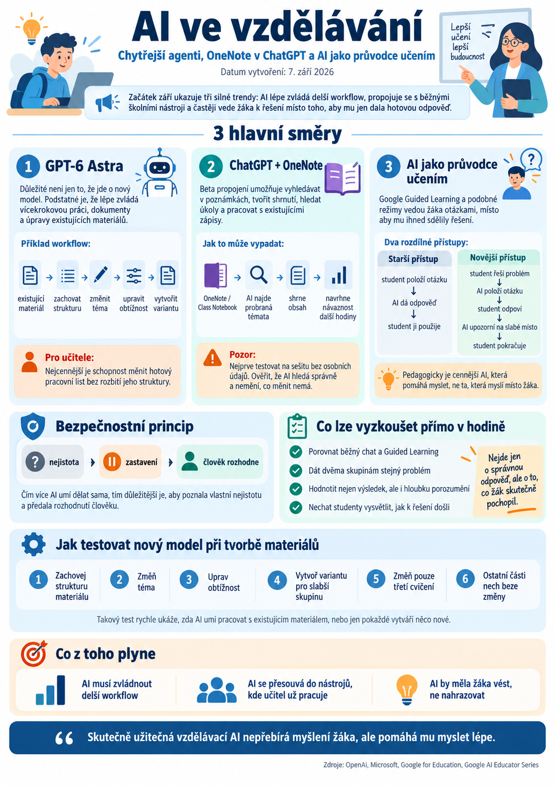

{kind=link}

Začátek září přinesl několik novinek, které dobře ukazují, kam se AI ve vzdělávání posouvá. Nejde už jen o stále schopnější chatboty. AI se postupně učí pracovat v delších pracovních postupech, napojovat se přímo na běžné školní nástroje a stále častěji také vést žáka k řešení místo toho, aby mu pouze poskytla hotovou odpověď.
Pro učitele jsou zajímavé především tři směry: nový model GPT-6 Astra, propojení ChatGPT s OneNotem a rozvoj režimů, které využívají AI jako průvodce učením.
GPT-6 Astra: důležitější než nový model je způsob práce
OpenAI představilo model GPT-6 Astra zaměřený na komplexnější vícekrokové úlohy, práci s dokumenty, výzkum, používání počítače a tvorbu výstupů podle existujících šablon.
Pro učitele není nejzajímavější samotný název nového modelu ani jeho výkon v testech. Prakticky mnohem důležitější je schopnost držet se delšího pracovního postupu a respektovat existující strukturu materiálu.
Typickým příkladem může být práce s hotovým pracovním listem:
Právě tento typ práce bývá pro učitele cennější než jednorázové generování materiálu od nuly.
Astra přichází také do Microsoft Copilotu
Microsoft oznámil dostupnost GPT-6 Astra ve vybraných produktech svého Copilot ekosystému, například v Copilot Cowork a Copilot Studio.
To neznamená, že každý uživatel školního Microsoft 365 automaticky získává nový model. Dostupnost závisí na konkrétním produktu, licenci a nastavení organizace.
Pro školy je ale důležitý samotný trend: výkonnější modely se stále více propojují s prostředím, kde už lidé skutečně pracují.
AI tak postupně přestává být samostatnou aplikací a začíná se stávat součástí běžných pracovních procesů.
Když si AI není jistá, měla by se zastavit
Zajímavým bezpečnostním principem u novějších agentních systémů je snaha rozpoznat situaci, kdy AI pravděpodobně špatně pochopila zadání.
Místo toho, aby pokračovala za každou cenu, může práci pozastavit a vyžádat kontrolu uživatelem.
Pro školní AI systémy je tento princip velmi důležitý:
To je mnohem bezpečnější než model:
Čím více totiž AI dokáže dělat sama, tím důležitější je schopnost poznat vlastní nejistotu a předat rozhodnutí člověku.
ChatGPT se propojuje s OneNotem
Další zajímavou novinkou je beta verze propojení ChatGPT s OneNotem.
ChatGPT může v poznámkách:
- vyhledávat informace,
- vytvářet shrnutí,
- hledat úkoly a rozhodnutí,
- pracovat s existujícími poznámkami,
- podle dostupných oprávnění také některé poznámky vytvářet nebo upravovat.
Pro školy používající Microsoft 365 je to potenciálně velmi zajímavé.
Mohlo by vzniknout například workflow:
To už je podstatně praktičtější než ruční kopírování obsahu z OneNotu do samostatného chatbotu.
Nejprve testovat, potom teprve zapojovat školní data
Propojení s OneNotem je ale zatím vhodné chápat jako experimentální funkci.
Nejbezpečnější je začít na testovacím sešitu bez osobních údajů žáků.
Dává smysl nejprve ověřit například:
- zda AI správně nachází informace,
- zda rozumí struktuře sešitu,
- zda nevytahuje obsah z nesprávných sekcí,
- zda při zápisu nemění něco, co měnit nemá.
Až pokud se nástroj osvědčí, má smysl uvažovat o hlubším využití ve školním workflow.
U AI platí jednoduché pravidlo: čím větší oprávnění, tím menší prostor pro bezstarostné experimentování.
Google posiluje AI, která žáka vede místo toho, aby odpovídala
Google současně rozvíjí vzdělávací funkce zaměřené na Guided Learning.
Princip je podobný sokratovskému vedení: AI nemá studentovi okamžitě sdělit řešení, ale postupně jej otázkami dovést k pochopení.
To je podle mě jeden z nejdůležitějších směrů současné AI ve vzdělávání.
První generace školního používání AI často vypadala takto:
Novější přístup může vypadat jinak:
Rozdíl je zásadní.
V prvním případě AI nahrazuje část práce žáka.
Ve druhém případě AI může pomáhat jeho práci řídit.
AI tutor není totéž jako generátor odpovědí
Podobný směr je vidět i u dalších nástrojů, například ChatGPT Study Mode.
AI se postupně učí:
- rozdělit problém na menší kroky,
- klást otázky,
- reagovat na odpověď žáka,
- upravovat obtížnost,
- vysvětlovat chybu,
- nepředkládat řešení okamžitě.
To je pedagogicky mnohem zajímavější než pouhé generování textu.
Samozřejmě stále platí, že AI může udělat chybu nebo žáka vést špatným směrem. Učitel proto zůstává zodpovědný za výběr vhodného nástroje a typu úlohy.
Co lze vyzkoušet přímo v hodině
Jednoduchým experimentem může být porovnání běžného chatu a režimu Guided Learning.
Rozdělte studenty na dvě skupiny a dejte jim stejný problém.
První skupina smí používat běžný chatbot.
Druhá skupina používá AI pouze jako průvodce, který klade otázky a neposkytuje hotové řešení.
Na konci studenti bez AI vysvětlí:
- jak k výsledku došli,
- proč je řešení správné,
- kterou část skutečně pochopili,
- kde jim AI pomohla.
Nejde tedy pouze o správný výsledek, ale o porovnání hloubky porozumění.
To je podle mě mnohem zajímavější způsob hodnocení AI nástroje než jednoduchá otázka: „Který chatbot odpovídá lépe?“
Jak testovat nový model při tvorbě materiálů
Pokud se nový výkonnější model objeví v dostupném účtu, není potřeba ho testovat otázkou:
„Vytvoř mi pracovní list.“
Mnohem užitečnější je vzít skutečný existující materiál a postupně zadávat změny.
Například:
- zachovej strukturu materiálu,
- změň téma,
- uprav úroveň obtížnosti,
- vytvoř variantu pro slabší skupinu,
- změň pouze třetí cvičení,
- ostatní části nech beze změny.
Takový test rychle ukáže, zda AI opravdu umí pracovat s existujícím materiálem, nebo pouze pokaždé vytvoří něco nového.
Pro tvůrce vzdělávacích materiálů je právě tato schopnost velmi důležitá.
Co z toho plyne pro vlastní vzdělávací AI nástroje
Aktuální vývoj ukazuje tři důležité principy.
AI musí umět pracovat v delším workflow
Nestačí vygenerovat jeden text.
Dobrá vzdělávací AI musí zvládnout několik navazujících kroků a přitom zachovat původní zadání, strukturu a pedagogický záměr.
AI se bude stále více napojovat na existující nástroje
OneNote, Drive, Teams, dokumenty, tabulky nebo školní úložiště se postupně stávají přirozenou součástí AI workflow.
Budoucnost tedy pravděpodobně nebude v neustálém kopírování obsahu do samostatného chatu.
AI se přesune tam, kde už učitel pracuje.
AI by měla žáka vést, ne nahrazovat
Pro vzdělávání je nejdůležitější otázka stále stejná:
Pomáhá nástroj studentovi přemýšlet, nebo přemýšlí místo něj?
Čím schopnější modely budou, tím důležitější tato otázka bude.
Shrnutí
Nejdůležitější novinkou není samotný příchod dalšího výkonnějšího modelu.
Mnohem podstatnější je souběh několika trendů:
AI lépe zvládá dlouhé pracovní postupy.
AI se připojuje přímo k nástrojům, ve kterých už učitel pracuje.
AI se postupně učí žáka vést místo toho, aby mu pouze poskytovala odpovědi.
Právě poslední bod může být pro školství nejdůležitější.
Chytřejší AI totiž automaticky neznamená lepší vzdělávání.
Skutečně užitečná vzdělávací AI vzniká teprve tehdy, když nepřebírá myšlení žáka, ale pomáhá mu myslet lépe.
Zdroje: OpenAI, Microsoft, Google for Education, Google AI Educator Series.